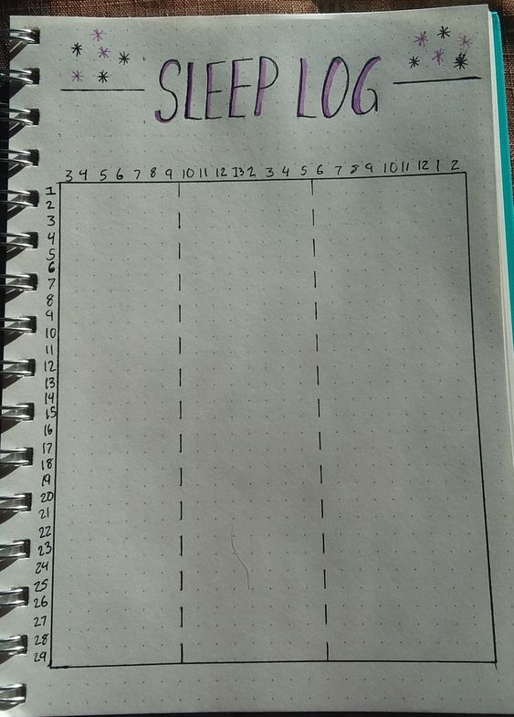

Often get the feeling that you cannot concentrate? Mood swings often? Fidgety throughout the Day? Seem like you are moving in slow motion? That is the effects of Fatigue. With SleepTracker you can begin to chart your sleep cylce and maximize the bebifits of getting the right amount of sleep for your unique body!!!
SleepTracker comes from the minds of Lambda Students who know exactly what the sypmtoms of Fatigue are, and we have come up with a solution to allow you to maximize the benefits of sleep and track where you are on your journey to get the best out of your body and mind through tracking your sleep! Don't let your lack of sleep keep you from reaching your ultimate potenctial and from achieving your dreams!!!
SleepTracker allows you to combine a sleep journal and a mood tracker in one convenient place with our digital app that works on all devices!!!
